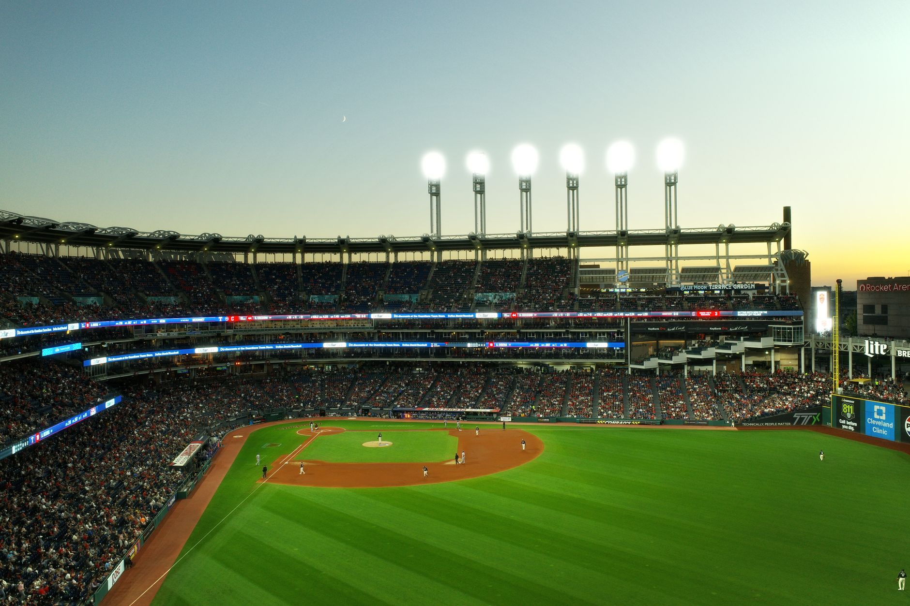

A tense battle from the start
The atmosphere at the ballpark was electric as the Cleveland Guardians took the field against the Tampa Bay Rays for the opening game of the ALCS. Both teams entered the matchup with immense pressure, knowing that a win in Game 1 often sets the momentum for the entire series. For much of the early innings, it appeared that the Rays' pitching staff would dominate the contest, keeping the Guardians' hitters off balance with high-velocity fastballs and sharp breaking balls.
The Rays utilized their deep bullpen effectively, stifling any early attempts by Cleveland to build a lead. Every time the Guardians threatened to put runners on base, the Tampa Bay defense tightened up, executing flawless plays to prevent momentum from shifting. It was a classic postseason pitcher's duel, characterized by strategic strikes and defensive precision that left both fanbases holding their breath.
The turning point in the late innings
As the game entered the late stages, the tension reached a breaking point. The Rays held a slim lead, and it seemed as though they were on the verge of securing a vital advantage in the series. However, the Guardians' lineup showed the resilience that has defined their postseason run so far. The momentum began to shift when the middle of the order started finding gaps in the Rays' defense, turning walks into base runners and singles into scoring opportunities.
The real magic happened when the guards and key utility players stepped up to the plate. Instead of crumbling under the weight of the postseason spotlight, these players delivered clutch contact. A series of disciplined at-bats forced the Rays' relief pitchers into difficult counts, eventually leading to the decisive hits that would change the course of the game.
This team never stops fighting, no matter what the scoreboard says in the eighth or ninth inning. That is the identity we have built all season long.
Key statistical highlights from the game
The comeback was not just a matter of luck; it was a masterclass in situational hitting and situational awareness. The Guardians managed to exploit specific weaknesses in the Rays' relief rotation, capitalizing on high pitch counts and missed locations.
Impact on the ALCS series
With this victory, the Guardians take a 1-0 lead in the series, placing the Rays in a position where they must respond immediately in Game 2. For Cleveland, this win validates their aggressive style of play and their ability to remain composed during high-leverage moments. The psychological boost of a comeback victory cannot be overstated in a short series like the ALCS.
The Rays, on the other hand, will need to reassess their late-game pitching strategy. While their starters performed admirably, the inability to close out the game against a resilient Cleveland lineup could be a recurring theme if they do not make adjustments. The focus now shifts to the upcoming matchups and how both managers utilize their pitching depth to counter the opposing hitters.
Looking ahead to the next matchup
As we move forward in the postseason, the intensity is only expected to rise. Fans are already looking toward the next scheduled game to see if the Rays can even the score or if the Guardians will continue their dominant run. Every pitch and every swing carries massive implications for who will eventually represent the American League in the World Series.
If you enjoyed the high-stakes drama of this ALCS opener, you might also want to catch up on other recent postseason action. Much like this intense battle, the Brewers Win Game 1 in Intense NLCS Rematch, which provided equally thrilling moments for baseball enthusiasts. Staying updated on all major league developments is essential for any true fan of the game.
See Also
If you enjoyed this Baseball News article, check out Brewers Win Game 1 in Intense NLCS Rematch for more useful reading.